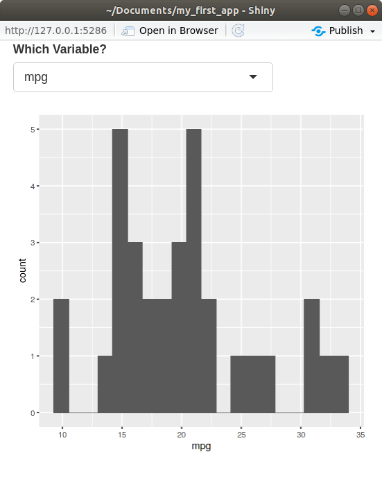
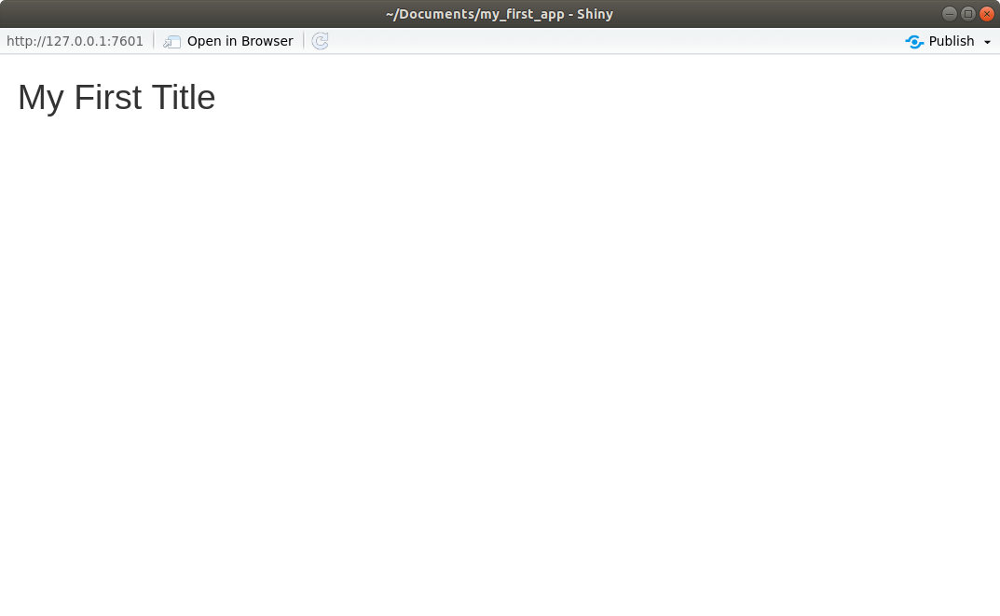
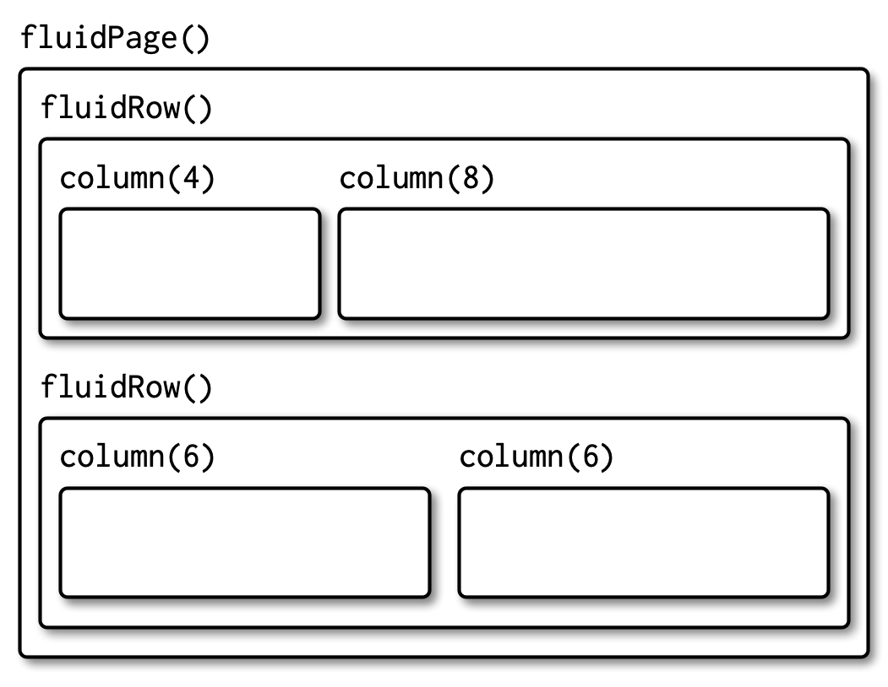
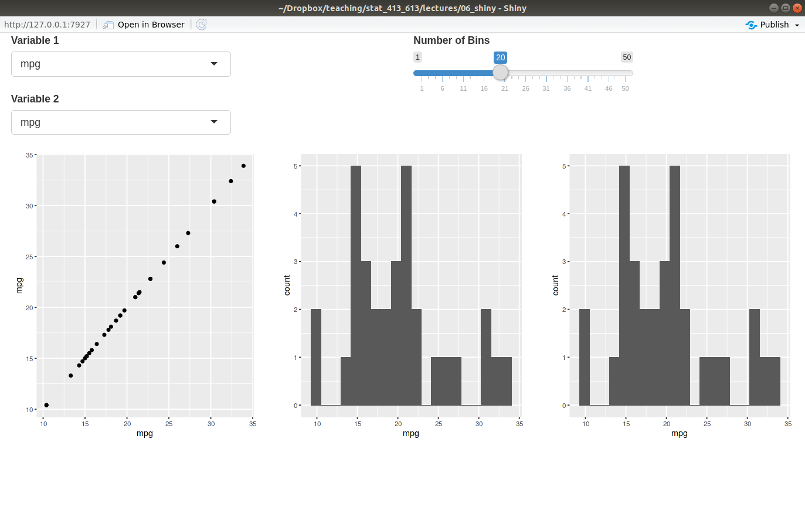
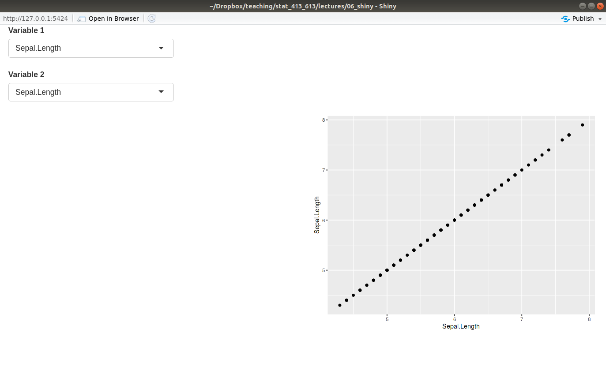
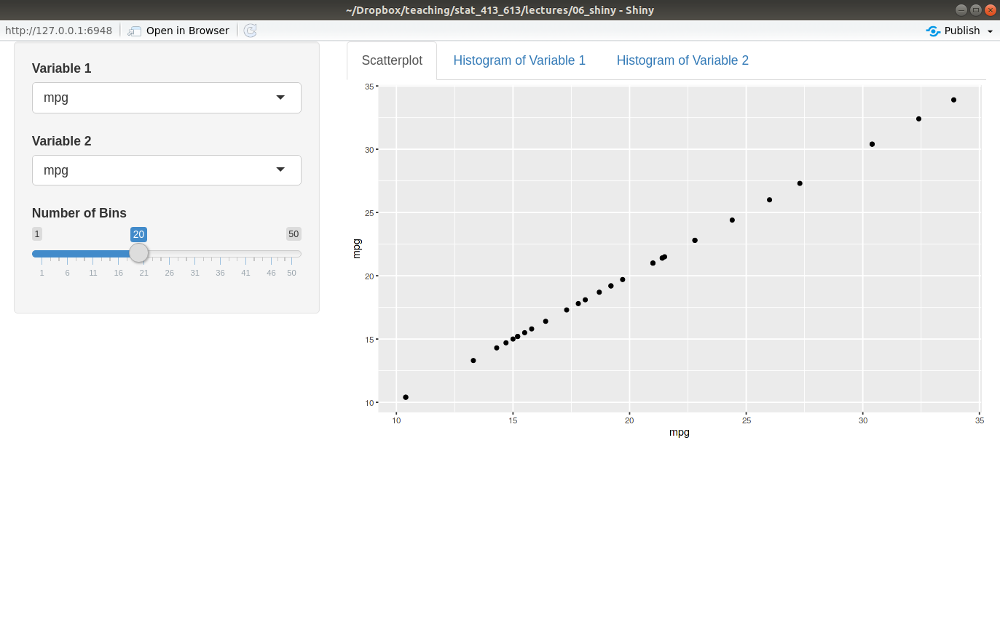
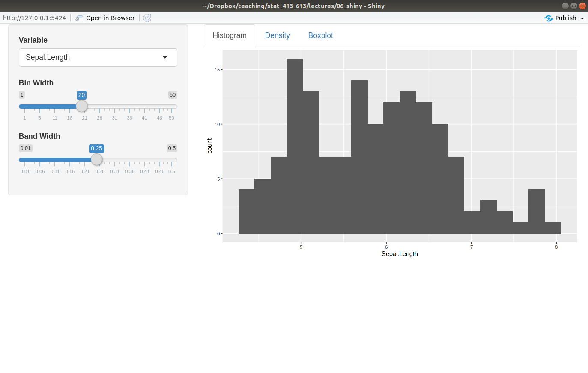
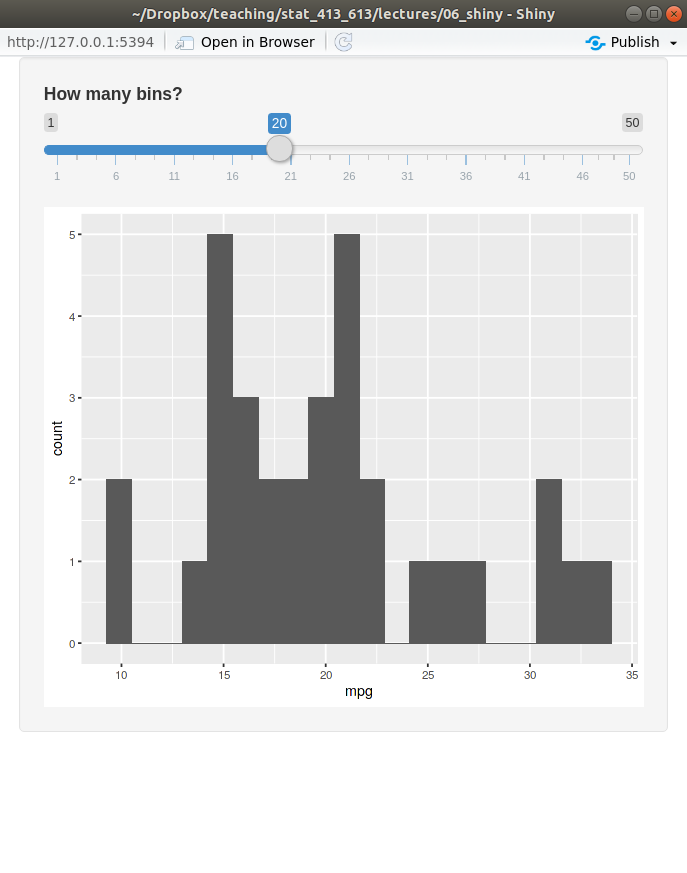
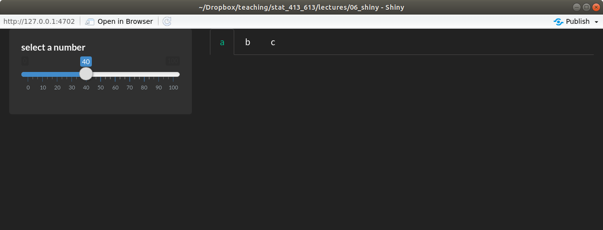

library(shiny)
ui <- fluidPage(
)
server <- function(input, output) {
}
shinyApp(ui = ui, server = server)Modifying Layouts and Aesthetics
Learning Objectives
- Learn the basics layouts.
- Application Layout Guide.
- Shiny Cheatsheet.
- Optional Resources
Motivation
Let’s start with a blank Shiny app
You learned in The Basics of Shiny Apps how to add input and output elements to the user interface of an app.
But the way we added elements was ugly.
library(shiny) library(ggplot2) ui <- fluidPage( selectInput("var", "Which Variable?", choices = names(mtcars)), plotOutput("plot") ) server <- function(input, output) { output$plot <- renderPlot({ ggplot(mtcars, aes(x = .data[[input$var]])) + geom_histogram(bins = 20) }) } shinyApp(ui = ui, server = server)
Today, we will learn how to make your layout more sophisticated than a list of items.
Basic Layouts
- The most basic layouts are created by adding arguments to the
fluidPage()function.- You add arguments to
fluidPage()to specify the layout of your app.
- You add arguments to
- We’ll also talk about grid layouts later, but to see more advanced layouts try out:
navbarPage().dashboardPage(): https://rstudio.github.io/shinydashboard/- Enhanced
dashboardPage(): https://rinterface.github.io/shinydashboardPlus/
Title Panel
Add a title to your app using the
titlePanel()function.library(shiny) ui <- fluidPage( titlePanel("My First Title") ) server <- function(input, output) { } shinyApp(ui = ui, server = server)Running the app, you should get something like this:

Grid Layout
To create a general layout, use the
fluidRow()andcolumn()functions.fluidRow()- Creates a new row of panels.
- Takes
column()calls as input. - You place as many
column()calls as you want columns. - It can have a title.
column()- Used as an argument in
fluidRow(). - The first argument should be a number between 1 and 12 (the
width). - All
column()calls should havewidths that sum to 12. - The rest of the arguments are input/output elements to include in that column.
- Used as an argument in
Hadley’s Graphic:

Let’s make a shiny app with two input columns in one row, and three plot columns in a second row.
library(shiny) library(ggplot2) ui <- fluidPage( fluidRow(title = "Inputs", column(6, selectInput("var1", "Variable 1", choices = names(mtcars)), selectInput("var2", "Variable 2", choices = names(mtcars)) ), column(6, sliderInput("bins", "Number of Bins", min = 1, max = 50, value = 20) ) ), fluidRow(title = "Outputs", column(4, plotOutput("plot1") ), column(4, plotOutput("plot2") ), column(4, plotOutput("plot3") ) ) ) server <- function(input, output) { output$plot1 <- renderPlot({ ggplot(mtcars, aes(x = .data[[input$var1]], y = .data[[input$var2]])) + geom_point() }) output$plot2 <- renderPlot({ ggplot(mtcars, aes(x = .data[[input$var1]])) + geom_histogram(bins = input$bins) }) output$plot3 <- renderPlot({ ggplot(mtcars, aes(x = .data[[input$var2]])) + geom_histogram(bins = input$bins) }) } shinyApp(ui = ui, server = server)Running the app, you should get something like this:

Note: You can nest
fluidRow()’s insidefluidRow()’s. It can get quite complicated.Exercise: Create a grid layout of four squares where the top left square takes as input the variables of the
palmerpenguins::penguinsdataset to include in a scatterplot and the bottom right contains the resulting scatterplot, color-coded by species. The top right square and bottom left squares should remain empty.Your final app should look like this:

Tabsets
You can have outputs subdivided by tabs with
tabsetPanel()andtabPanel().tabsetPanel()- Takes as input
tabPanel()calls. - You place it as an argument in either
mainPanel()in the sidebar layout, or in one of thecolumn()calls in the grid layout.
- Takes as input
tabPanel()- Takes as input different input/output elements, separated by a comma. Each element will get its own tab.
- Needs to be placed in
tabsetPanel().
Here is an example from the
mtcarsdataset, where the tabs have different plots for the variables we select.library(shiny) library(ggplot2) ui <- fluidPage( sidebarLayout( sidebarPanel( selectInput("var1", "Variable 1", choices = names(mtcars)), selectInput("var2", "Variable 2", choices = names(mtcars)), sliderInput("bins", "Number of Bins", min = 1, max = 50, value = 20) ), mainPanel( tabsetPanel( tabPanel("Scatterplot", plotOutput("plot1") ), tabPanel("Histogram of Variable 1", plotOutput("plot2") ), tabPanel("Histogram of Variable 2", plotOutput("plot3") ) ) ) ) ) server <- function(input, output) { output$plot1 <- renderPlot({ ggplot(mtcars, aes(x = .data[[input$var1]], y = .data[[input$var2]])) + geom_point() }) output$plot2 <- renderPlot({ ggplot(mtcars, aes(x = .data[[input$var1]])) + geom_histogram(bins = input$bins) }) output$plot3 <- renderPlot({ ggplot(mtcars, aes(x = .data[[input$var2]])) + geom_histogram(bins = input$bins) }) } shinyApp(ui = ui, server = server)Running the app, you should get something like this:

Exercise: Create a basic Shiny app that has a tab for a density plot, a histogram, and a boxplot for a variable from the
palmerpenguins::penguinsdataset. The user should get to choose the variable plotted, the the number of bins for the histogram, and the bandwidth for the density plot (see the help page ofgeom_smooth()). A good default value for the bandwidth might be 0.25 in this case.Your app should look like this:

Group Elements Together
You can group elements together in a slightly inset border with
wellPanel().library(shiny) library(ggplot2) ui <- fluidPage( wellPanel( sliderInput("bins", "How many bins?", min = 1, max = 50, value = 20), plotOutput("hist") ) ) server <- function(input, output, session) { output$hist <- renderPlot({ ggplot(mtcars, aes(x = mpg)) + geom_histogram(bins = input$bins) }) } shinyApp(ui, server)
There are many other visual styles for groupings.
Other Panels
- Here are some other panels you can look at to group elements together.
absolutePanel().conditionalPanel().fixedPanel().headerPanel().inputPanel().navlistPanel().
Shiny Themes
For extreme customizability on the look of your Shiny App, you’ll have to learn CSS.
We will not learn CSS.
But the shinythemes package allows you to access many different themes available in Bootstrap.
Inside
fluidPage(), list thethemeargument to beshinytheme("theme_name"), where"theme_name"is one of the themes that comes with shinythemes.The full list of available themes can be found by
help("shinythemes")Example:
library(shiny) library(shinythemes) ui <- fluidPage(theme = shinytheme("darkly"), sidebarLayout( sidebarPanel( sliderInput("number", "select a number", 0, 100, 40) ), mainPanel( tabsetPanel( tabPanel("a"), tabPanel("b"), tabPanel("c") ) ) ) ) server <- function(input, output, session) { } shinyApp(ui, server)
Shiny Dashboards
The shinydashboard package lets you obtain more proffesional looking Shiny apps.
The only thing that changes in a shinydashboard is the user interface.
The structure of a shinydashboard looks like this:
library(shiny) library(shinydashboard) ui <- dashboardPage( dashboardHeader(), dashboardSidebar(), dashboardBody() ) server <- function(input, output, session) { } shinyApp(ui, server)dashboardHeader()just changes the title of the Shiny app.dashboardSidebar()is where you place a menu.dashboardBody()is where you place content.Use
fluidRow()andbox()(orcolumn()) to add content todashboardBody().library(shiny) library(shinydashboard) library(ggplot2) ui <- dashboardPage( dashboardHeader(), dashboardSidebar(), dashboardBody( fluidRow( box( plotOutput("hist") ), box( sliderInput("nobs", "Number of observations", min = 1, max = 100, value = 50), title = "Controls" ) ) ) ) server <- function(input, output, session) { output$hist <- renderPlot({ x <- rnorm(input$nobs) qplot(x, bins = 10) }) } shinyApp(ui, server)Create tabs by:
- using
sidebarMenu()andmenuItem()indashboardSidebar(). - using
tabItems()andtabitem()indashboardBody().
library(shiny) library(shinydashboard) library(ggplot2) ui <- dashboardPage( dashboardHeader(), dashboardSidebar( sidebarMenu( menuItem(text = "Histogram", tabName = "tabhist"), menuItem(text = "Scatterplot", tabName = "tabscat") ) ), dashboardBody( tabItems( tabItem(tabName = "tabhist", fluidRow( box( plotOutput("hist") ), box( sliderInput("nobs", "Number of observations", min = 1, max = 100, value = 50), title = "Controls" ) ) ), tabItem(tabName = "tabscat", fluidRow( box( plotOutput("scatter") ), box( sliderInput("nobs2", "Number of observations", min = 1, max = 100, value = 50), sliderInput("corr", "Correlation", min = 0, max = 1, value = 0, step = 0.1), title = "Controls" ) ) ) ) ) ) server <- function(input, output, session) { output$hist <- renderPlot({ x <- rnorm(input$nobs) qplot(x, bins = 10) }) output$scatter <- renderPlot({ x <- rnorm(n = input$nobs2) y <- rnorm(n = input$nobs2, mean = input$corr * x, sd = sqrt(1 - input$corr^2)) qplot(x, y) }) } shinyApp(ui, server)- using
Use the
skinargument indashboardPage()to change the appearence of your dashboard.For more information on shinydashboards, see: https://rstudio.github.io/shinydashboard/index.html